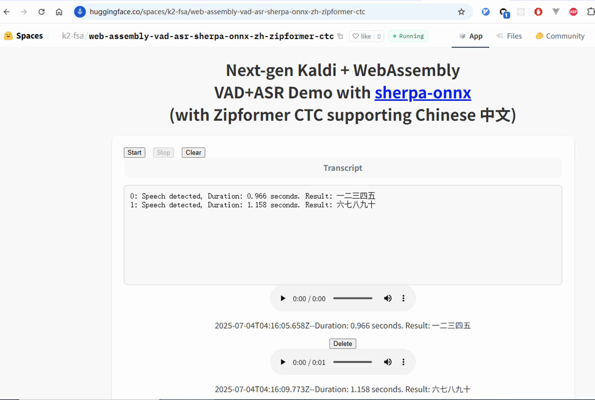

Zipformer CTC models
This page lists non-streaming Zipformer CTC models from icefall.
sherpa-onnx-zipformer-ctc-zh-int8-2025-07-03 (Chinese)
This model supports only Chinese. Its word error rate (WER) on aishell and wenetspeech is given below:
aishell test |
wenetspeech test_net |
wenetspeech test_meeting |
|
Word error rate (%) |
1.74 |
5.92 |
7.75 |
In the following, we describe how to download it and use it with sherpa-onnx.
Hint
To use Ascend NPU with this model, please see sherpa-onnx-ascend-910B-cann-7.0-5-seconds-zipformer-ctc-zh-2025-07-03 (中文).
Pre-built Android APK
APP |
Download (arm64-v8a) |
国内镜像 |
Source code |
Simulated-streaming ASR |
|||
VAD + ASR |
Hint
Please always download the latest version. We use v1.12.3 in the above table
as an example.
See Pre-built APKs for more Android pre-built APKs.
WebAssembly example (ASR from a microphone)
{kind=link}
Hint
Source code for the WebAssembly example can be found at
Huggingface space (Decode a file)
URL |
|
Huggingface space |
https://huggingface.co/spaces/k2-fsa/automatic-speech-recognition |
国内镜像 |
https://hf.qhduan.com/spaces/k2-fsa/automatic-speech-recognition |
{kind=link}
Download the model
Please use the following commands to download it.
cd /path/to/sherpa-onnx
wget https://github.com/k2-fsa/sherpa-onnx/releases/download/asr-models/sherpa-onnx-zipformer-ctc-zh-int8-2025-07-03.tar.bz2
tar xvf sherpa-onnx-zipformer-ctc-zh-int8-2025-07-03.tar.bz2
rm sherpa-onnx-zipformer-ctc-zh-int8-2025-07-03.tar.bz2
ls -lh sherpa-onnx-zipformer-ctc-zh-int8-2025-07-03
Please check that the file sizes of the pre-trained models are correct. See the sizes of each file below.
total 722384
-rw-r--r-- 1 fangjun staff 176B Jul 3 14:36 README.md
-rw-r--r-- 1 fangjun staff 249K Jul 3 14:36 bbpe.model
-rw-r--r-- 1 fangjun staff 350M Jul 3 14:36 model.int8.onnx
drwxr-xr-x 5 fangjun staff 160B Jul 3 14:36 test_wavs
-rw-r--r-- 1 fangjun staff 13K Jul 3 14:36 tokens.txt
Decode wave files
Hint
It supports decoding only wave files of a single channel with 16-bit encoded samples, while the sampling rate does not need to be 16 kHz.
The following code shows how to use the int8 model to decode wave files.
cd /path/to/sherpa-onnx
./build/bin/sherpa-onnx-offline \
--zipformer-ctc-model=./sherpa-onnx-zipformer-ctc-zh-int8-2025-07-03/model.int8.onnx \
--tokens=./sherpa-onnx-zipformer-ctc-zh-int8-2025-07-03/tokens.txt \
sherpa-onnx-zipformer-ctc-zh-int8-2025-07-03/test_wavs/0.wav
Note
Please use ./build/bin/Release/sherpa-onnx-offline.exe for Windows.
Caution
If you use Windows and get encoding issues, please run:
CHCP 65001
in your commandline.
You should see the following output:
/Users/fangjun/open-source/sherpa-onnx/sherpa-onnx/csrc/parse-options.cc:Read:372 ./build/bin/sherpa-onnx-offline --zipformer-ctc-model=./sherpa-onnx-zipformer-ctc-zh-int8-2025-07-03/model.int8.onnx --tokens=./sherpa-onnx-zipformer-ctc-zh-int8-2025-07-03/tokens.txt sherpa-onnx-zipformer-ctc-zh-int8-2025-07-03/test_wavs/0.wav
OfflineRecognizerConfig(feat_config=FeatureExtractorConfig(sampling_rate=16000, feature_dim=80, low_freq=20, high_freq=-400, dither=0, normalize_samples=True, snip_edges=False), model_config=OfflineModelConfig(transducer=OfflineTransducerModelConfig(encoder_filename="", decoder_filename="", joiner_filename=""), paraformer=OfflineParaformerModelConfig(model=""), nemo_ctc=OfflineNemoEncDecCtcModelConfig(model=""), whisper=OfflineWhisperModelConfig(encoder="", decoder="", language="", task="transcribe", tail_paddings=-1), fire_red_asr=OfflineFireRedAsrModelConfig(encoder="", decoder=""), tdnn=OfflineTdnnModelConfig(model=""), zipformer_ctc=OfflineZipformerCtcModelConfig(model="./sherpa-onnx-zipformer-ctc-zh-int8-2025-07-03/model.int8.onnx"), wenet_ctc=OfflineWenetCtcModelConfig(model=""), sense_voice=OfflineSenseVoiceModelConfig(model="", language="auto", use_itn=False), moonshine=OfflineMoonshineModelConfig(preprocessor="", encoder="", uncached_decoder="", cached_decoder=""), dolphin=OfflineDolphinModelConfig(model=""), telespeech_ctc="", tokens="./sherpa-onnx-zipformer-ctc-zh-int8-2025-07-03/tokens.txt", num_threads=2, debug=False, provider="cpu", model_type="", modeling_unit="cjkchar", bpe_vocab=""), lm_config=OfflineLMConfig(model="", scale=0.5), ctc_fst_decoder_config=OfflineCtcFstDecoderConfig(graph="", max_active=3000), decoding_method="greedy_search", max_active_paths=4, hotwords_file="", hotwords_score=1.5, blank_penalty=0, rule_fsts="", rule_fars="", hr=HomophoneReplacerConfig(dict_dir="", lexicon="", rule_fsts=""))
Creating recognizer ...
Started
Done!
sherpa-onnx-zipformer-ctc-zh-int8-2025-07-03/test_wavs/0.wav
{"lang": "", "emotion": "", "event": "", "text": "对我做了介绍那么我想说的是呢大家如果对我的研究感兴趣呢", "timestamps": [0.16, 0.32, 0.48, 0.64, 0.80, 0.96, 1.00, 1.08, 1.60, 1.76, 1.92, 2.08, 2.24, 2.40, 2.56, 2.72, 3.04, 3.20, 3.36, 3.52, 3.68, 3.76, 3.84, 3.92, 4.00, 4.16, 4.32, 4.48, 4.60, 4.68, 4.80], "tokens":["▁ƌŕş", "▁ƍĩĴ", "▁ƌĢĽ", "▁ƋŠħ", "▁ƋšĬ", "▁Ǝ", "š", "Į", "▁Ɛģň", "▁Ƌşĩ", "▁ƍĩĴ", "▁ƍĤř", "▁ƏŕŚ", "▁ƎĽĥ", "▁ƍĻŕ", "▁ƌĴŇ", "▁ƌŊō", "▁ƌŔŜ", "▁ƌŌģ", "▁ƍŃŁ", "▁ƌŕş", "▁ƍĩĴ", "▁ƎĽĥ", "▁ƎŅķ", "▁ƎŏŜ", "▁ƍĥń", "▁ƌĦŚ", "▁Ə", "Ŝ", "ň", "▁ƌĴŇ"], "words": []}
----
num threads: 2
decoding method: greedy_search
Elapsed seconds: 0.349 s
Real time factor (RTF): 0.349 / 5.611 = 0.062
Speech recognition from a microphone
cd /path/to/sherpa-onnx
./build/bin/sherpa-onnx-microphone-offline \
--zipformer-ctc-model=./sherpa-onnx-zipformer-ctc-zh-int8-2025-07-03/model.int8.onnx \
--tokens=./sherpa-onnx-zipformer-ctc-zh-int8-2025-07-03/tokens.txt
Speech recognition from a microphone with VAD
cd /path/to/sherpa-onnx
wget https://github.com/k2-fsa/sherpa-onnx/releases/download/asr-models/silero_vad.onnx
./build/bin/sherpa-onnx-vad-microphone-offline-asr \
--silero-vad-model=./silero_vad.onnx \
--zipformer-ctc-model=./sherpa-onnx-zipformer-ctc-zh-int8-2025-07-03/model.int8.onnx \
--tokens=./sherpa-onnx-zipformer-ctc-zh-int8-2025-07-03/tokens.txt